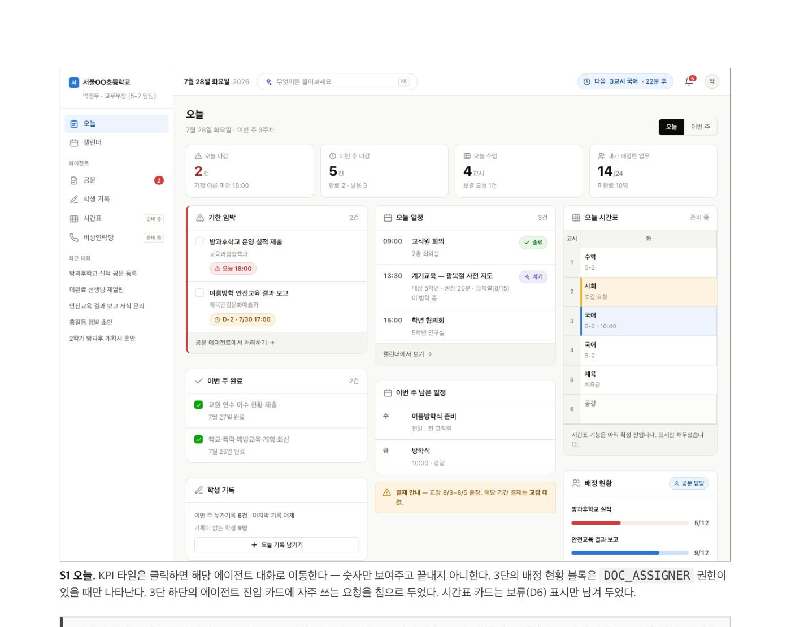
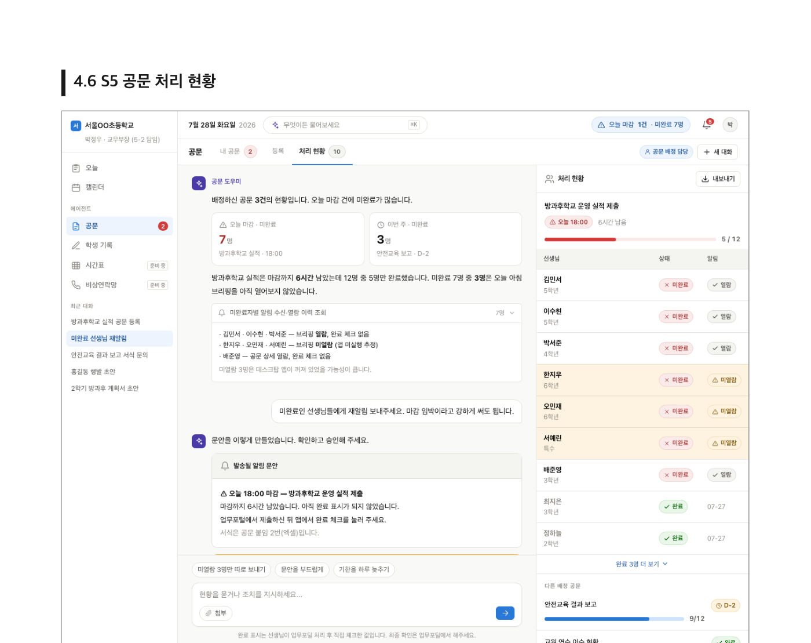

교직원 87명의 목소리로 공문과 일정을 놓치지 않게 돕는 AI 업무비서의 MVP를 정의하고 실증을 이끌고 있습니다.
기여도
서비스 기획 공동주도 1건, 협업 4건
역할
PM 겸 서비스 기획
발주
아이스크림미디어
기간
2026.07 ~ 2027.02
역할 및 기여도
- [협업]MVP 기능 범위와 우선순위 확정50%
- [협업]교사, 부장, 관리자 권한과 알림 정책 정의50%
- [협업]화면 디자인 및 개발 전달50%
- [협업]데모 피드백 반영과 QA50%
- [주도]가이드, 매뉴얼, 실증 결과보고서100%
[주도] 직접 책임지고 수행 / [협업] 다른 담당자와 함께 수행. 오른쪽 숫자는 해당 과업에서 본인 비중
성과
- 87명교직원 설문으로 요구 검증
- 3개MVP 핵심 기능 확정
- v5목업을 다섯 번 고쳐 완성도 확보
문제와 해결
교사들의 문제설계한 기능
- 공문 제출기한을 놓침 (보직교사 82%가 1순위로 꼽음)모든 일정을 모으는 캘린더와 기한 알림
- 공문 처리와 작성에 시간이 많이 듦공문을 읽고 배정하는 공문 도우미 에이전트
- 학생 관찰 기록과 생기부 작성 부담대화로 쌓는 누가기록 에이전트 (초안까지만)
작업물


산출물
- 서비스기획서 v1.1
- 기능명세서 v4
- HTML 목업 v5
- 설문 분석 보고서
- 자문단 워크숍 회의록
- 개발 WBS